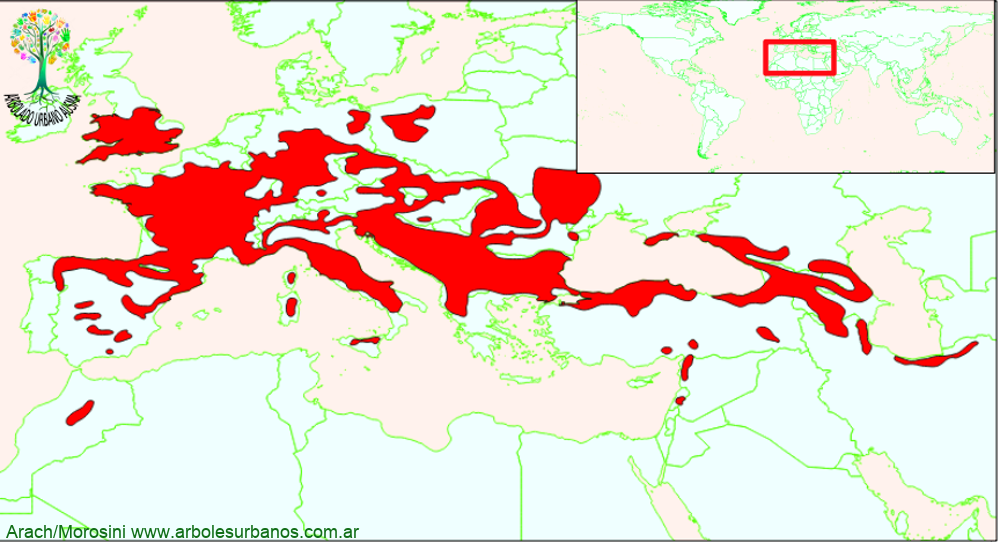

Sorbus torminalis (Serbal silvestre)

Serbal silvestre
NOMBRE CIENTÍFICO: Sorbus torminalis
FAMILIA BOTÁNICA: Rosáceas
ORIGEN: Tiene un área de distribución natural que se extiende desde la península Ibérica, hasta las costas de mar negro en Irán y desde Dinamarca al norte de Africa. Se lo encuentra en diversidad de suelos desde los ácidos a los básicos desde el nivel del mar hasta los 1500 metros de altitud, tanto en claros como en bosques donde convive con Hayas y Arces, entre otras especies.
DESCRIPCIÓN GENERAL: Es un árbol de segunda magnitud, aunque la bilbiografía cita ejemplares que superan los 20 metros de altura, con una amplia y redondeada copa, a veces piramidal, nace a pocos metros de altura. Su corteza joven es lisa de color rojizo o violáceo, brillante, con lenticelas vistosas, cuando envejece la corteza está fragmentada en pequeñas placas.
HOJAS: Su follaje es caduco, está formado por hojas alternas y simples, de base acorazonada y de 3 a 5 lóbulos triangulares, de color verde oscuro y adquiriendo tonalidades rojizas en el otoño.
FLORES: Son blancas, hermafroditas, agru p adas en corimbos terminales , aparecen entre noviembre y dicembre.
F RUTOS: S on pomos de hasta 2 cm de diámetro de color rojizo cuando maduran, esto es entre abril y mayo y persisten hasta la primavera en la planta.
USOS: Su madera es dura, apreciada para pequeños trabajos, además se utiliza para leña, sus frutos son aptas para el consumo humano, la usan para realizar dulces y bebidas alcohólicas. Ornamentalmente se lo utiliza como árbol individual o en grupos, también se lo utiliza en arbolado de alineación.
REPRODUCCIÓN: Se reproduce bien por semillas, hay que someterlas a 60 días de estratificación entre 2 y 4°.
PARTICULARIDADES: Es una especie que crece a plano sol o media sombre, resistente a fríos intensos de hasta -18°.